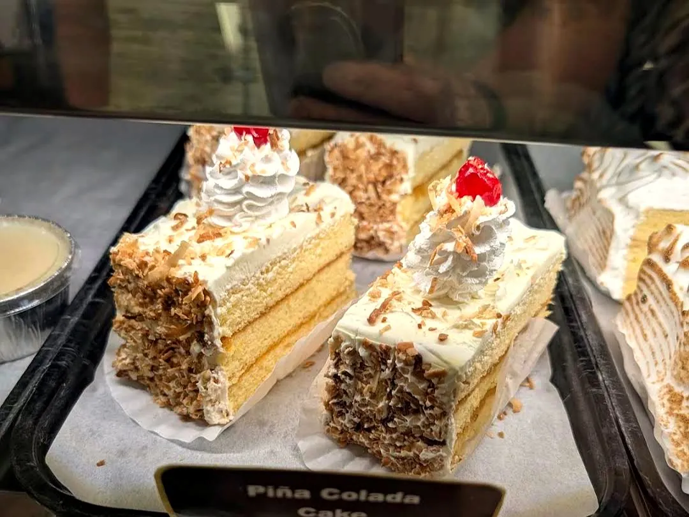
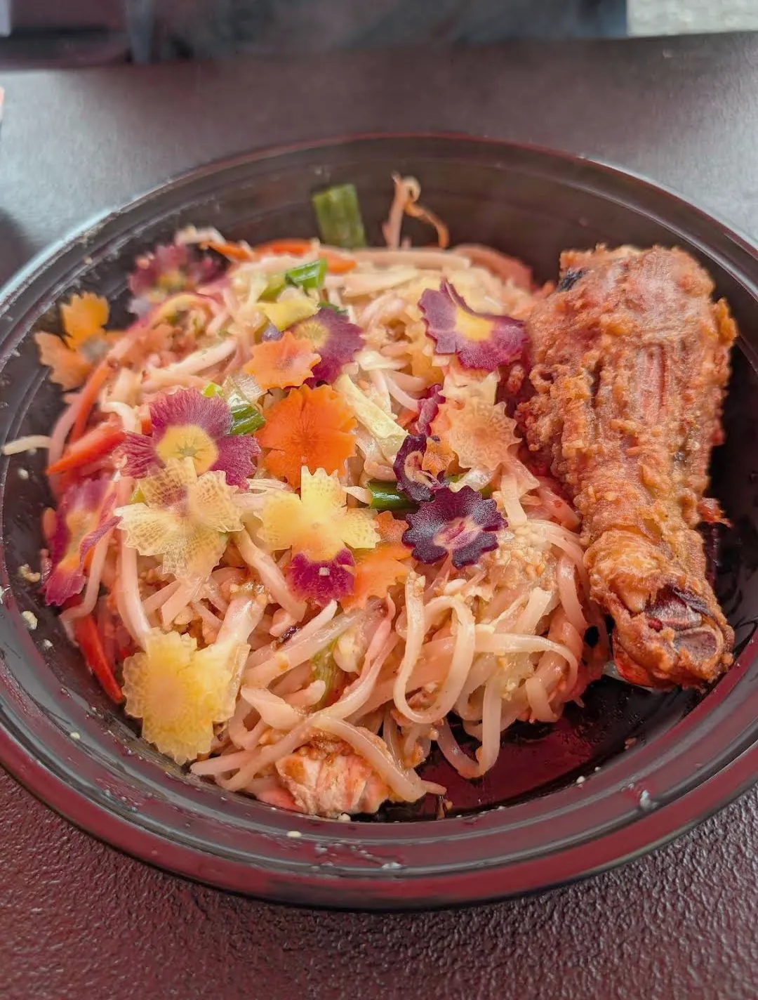
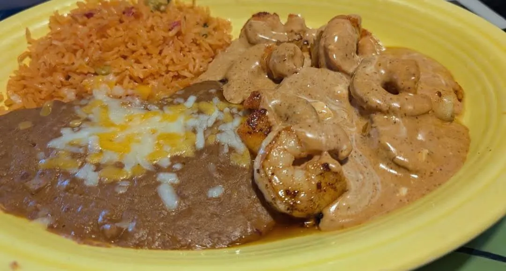
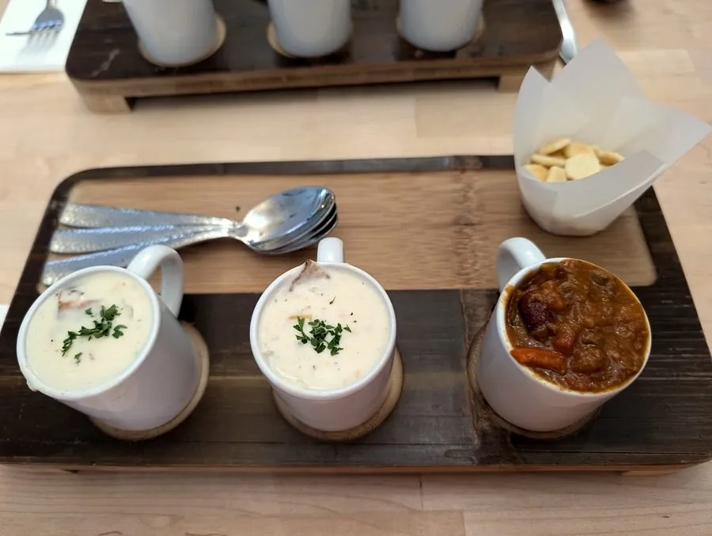
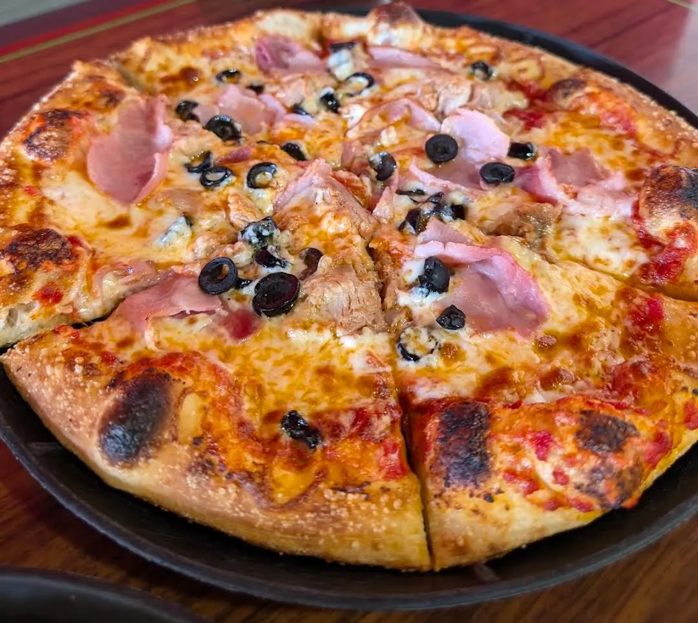
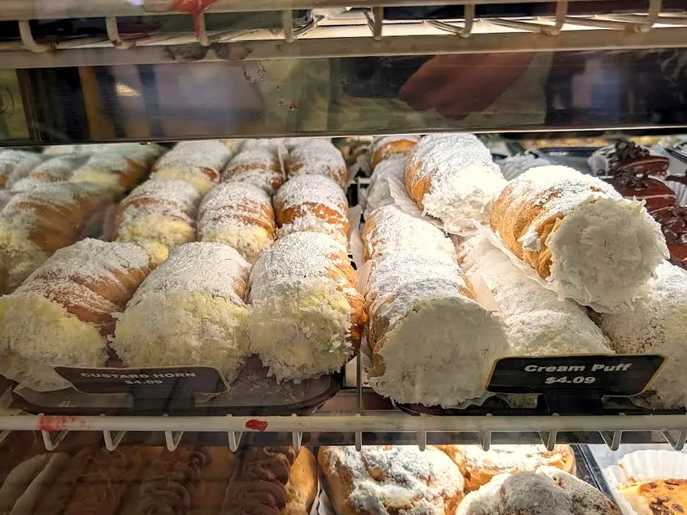
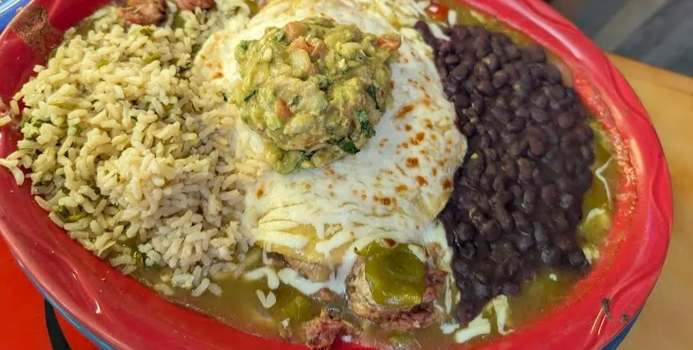
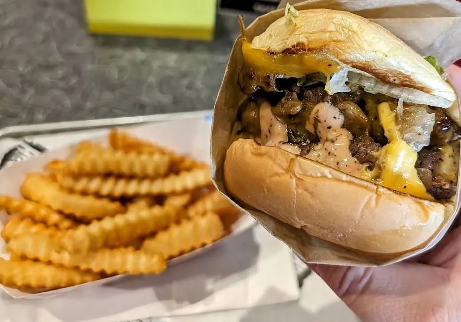
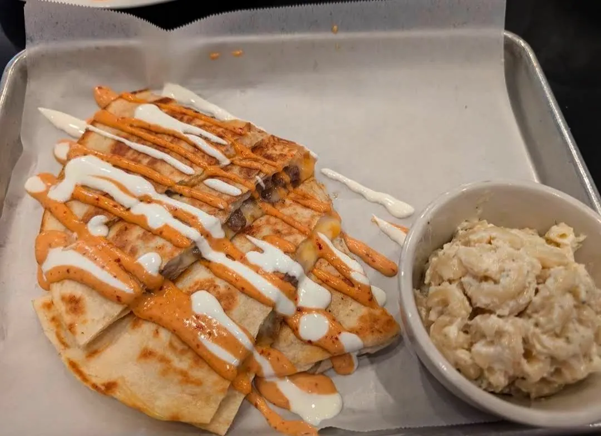

Food Guide
Where I'd Eat Again
Restaurants I've actually been to, by city. Tap a city or a pin to explore. See my travel photos → · My Best Of lists →
Photos
Food From My Travels
















